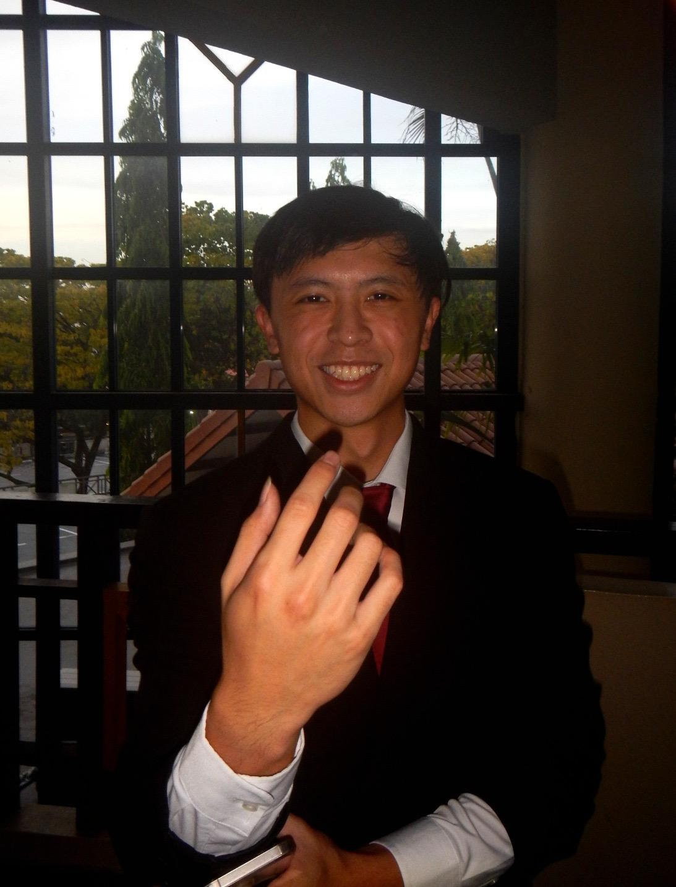
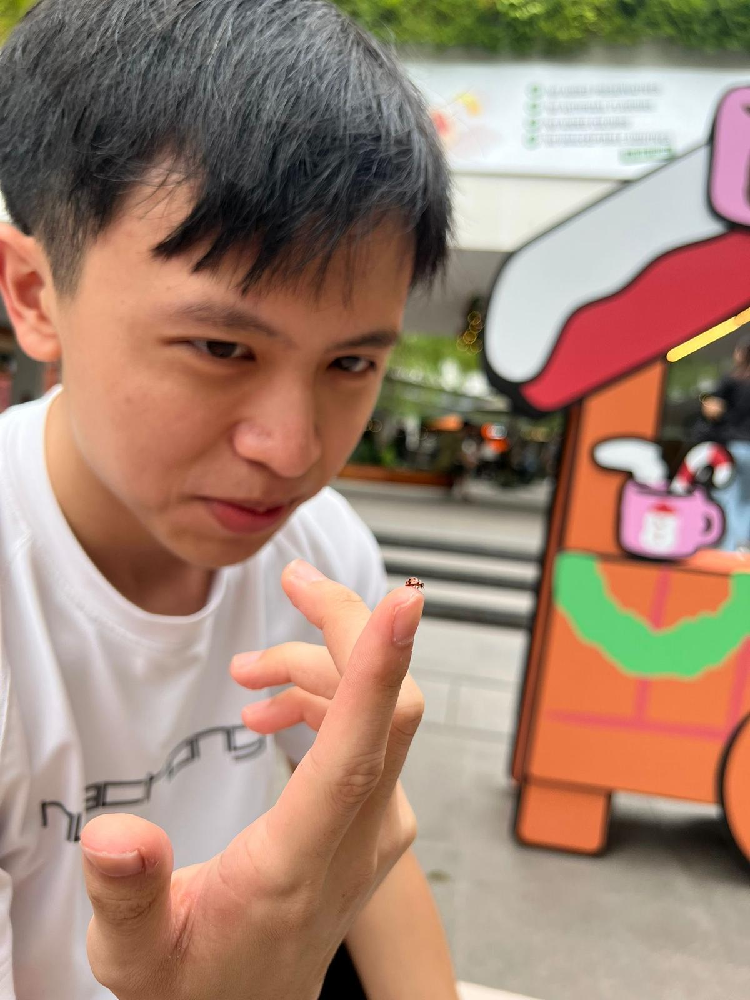
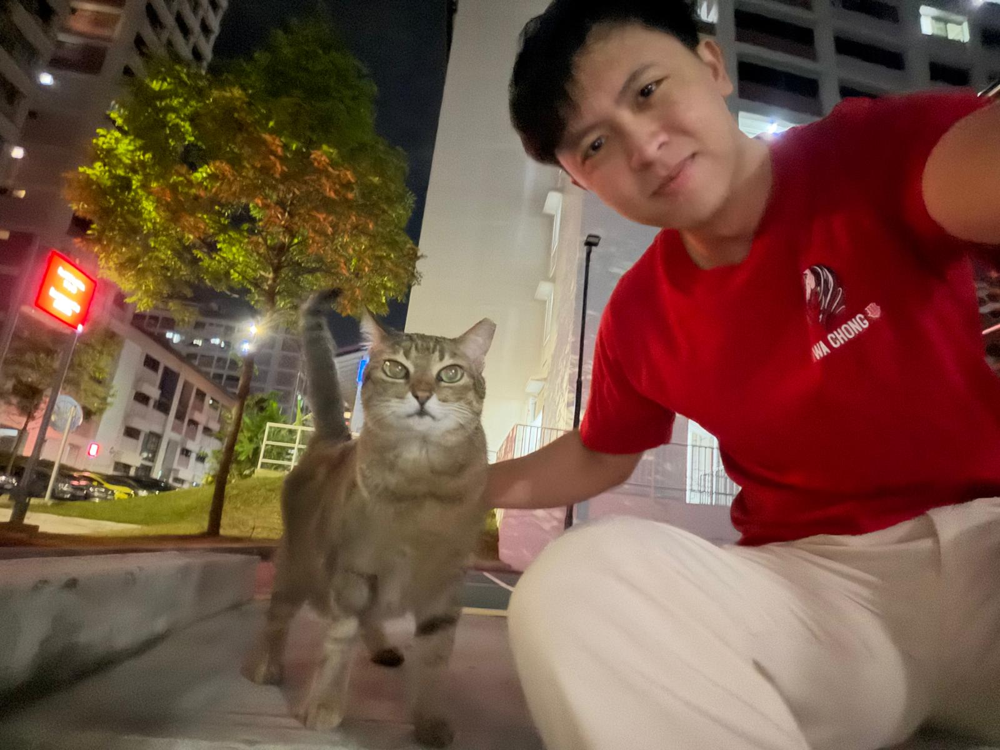
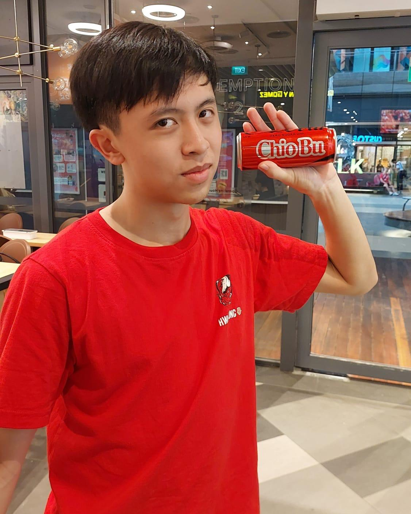

Ethan Kong
Researcher & Content Creator
MAJOR ACHIEVEMENTS MAJOR ACHIEVEMENTS MAJOR ACHIEVEMENTS MAJOR ACHIEVEMENTS

SSEF Silver Award (2025)
Science & Engineering
International Chemistry Quiz
High Distinction (2024)
NSG Triple Jump
Gold Medalist
INTERNSHIPS INTERNSHIPS INTERNSHIPS INTERNSHIPS

Nanyang Technological University
Collaborated on Pectin-based hydrogels and Silica Nanoparticles under Assoc Prof Sieren Lim.
TECHNICAL & CREATIVE TECHNICAL & CREATIVE TECHNICAL & CREATIVE

Financial Modelling
DaVinci Resolve
Team Leader
Data Analysis
Graphic Design
Research Expertise
